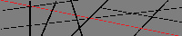

英治の簡易部屋
https://eizi2002.github.io/eroom/
Isn't it a complexity for him to think though the world is not thought to be as simple as she thinks either?
よーこそ
ここは英治が往年のホームページとか黒歴史ページとか呼ばれてる雰囲気のサイトを作ろうとした跡地です。
アクセスカウンターにWeb拍手にBBSやリンクまで主要要素は揃えるつもりです。
以上ご理解いただける方はコチラから↓
サーチバナーなど。
